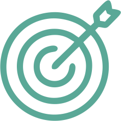

Diseñadora industrial
Profesional independiente
2020-2021
Diseño y desarrollo de productos.
Ingeniería de detalle.
Generación de documentación técnica.
Diseñadora industrial Sr.
Kreo S.A.
2007-2021
Investigación, diseño y desarrollo de nuevos productos para diversos clientes e industrias.
Actualización y modificación de productos existentes.
Modelado paramétrico (CATIA V5, INVENTOR). Renderizado. Confección de planos y documentación técnica.
Trato con proveedores y seguimiento de producción.
Ingeniería inversa: Manejo de Scanner 3D (CreaForm), post procesado de información y remodelado. Análisis de superficies, desviaciones y control dimensional. (Polyworks, Geomagic Design X)
Manejo de impresión 3D, máquinas y herramientas para la realización de maquetas y prototipos.
Seguimiento y control de Normas ISO 9001 de Calidad aplicadas a la producción de cascos urbanos y de polo. Actualización del sistema de calidad y coordinación de auditorias.
Clientes: AeropuertosArgentina 2000, AYSA, Cesvi, Essen, La Martina, Meditea, Molinos, Renault, YPF.
Consultora externa de Ingenieria y diseño industrial en AYSA
AySA
2016-2019
Relevamiento, escaneo 3D e ingeniería inversa de bombas de agua (Modelado 3D en Inventor). Generación de planos de los componentes para su posterior fabricación o reparación.
Ingeniería y diseño de mejoras.
Control dimensional de partes. Análisis de esfuerzos.
Diseño de modelos de fundición.
Dictado de capacitaciones para el uso del Escaner 3D (HandyScan), manejo de nubes de puntos y procesamiento, utilización de programas de modelado 3D (DesignX).
Diseñadora Industrial
Productos ONN
2009-2012
Creación de marca, diseño y desarrollo de productos, planeamiento de matricería, diseño de gráfica, packaging para la linea de Productos ONN.
Productos comercializados en todo el país.
Diseñadora
O.H.A. Macabi
2006-2007
Diseño de comunicación institucional.
Diseño de señalética para sede y campo de deportes.